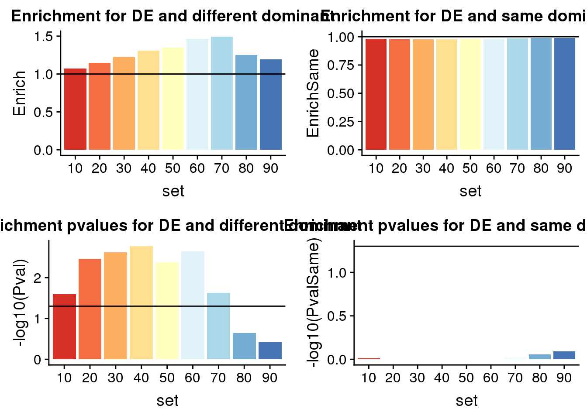
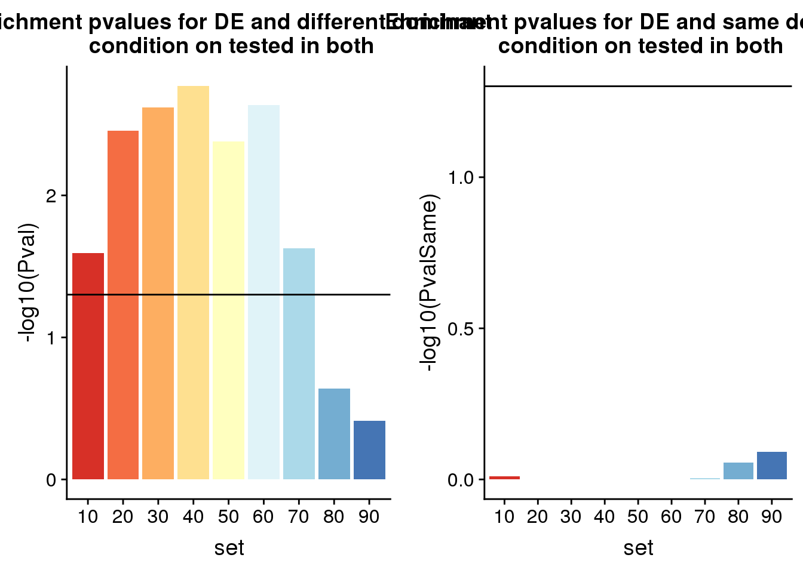
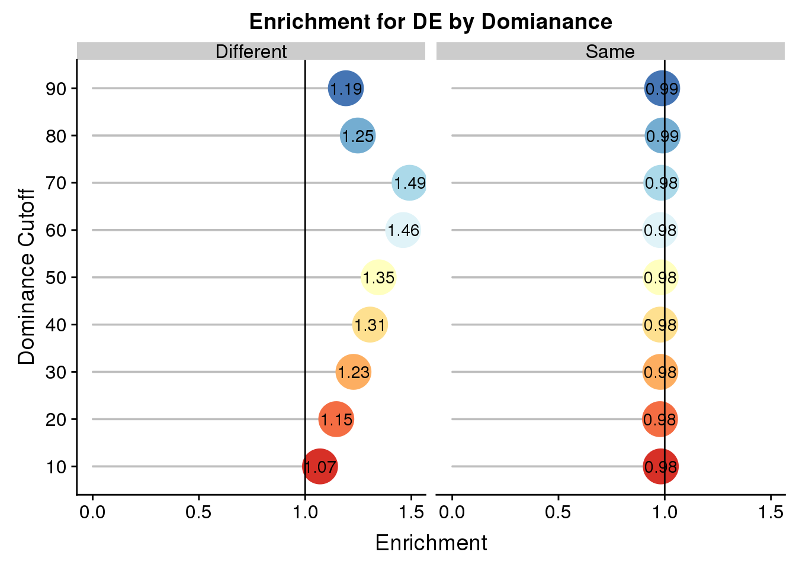
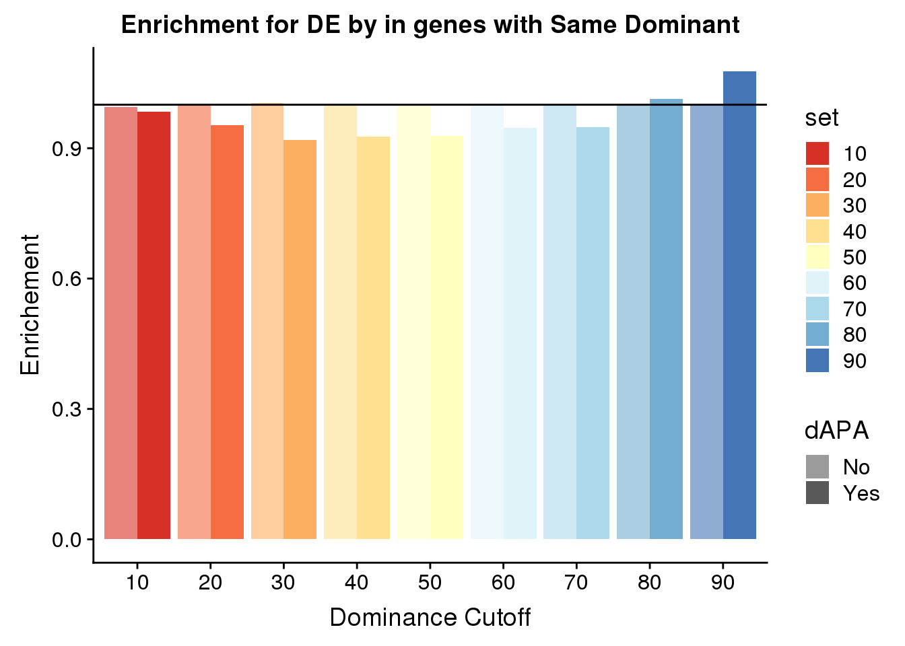
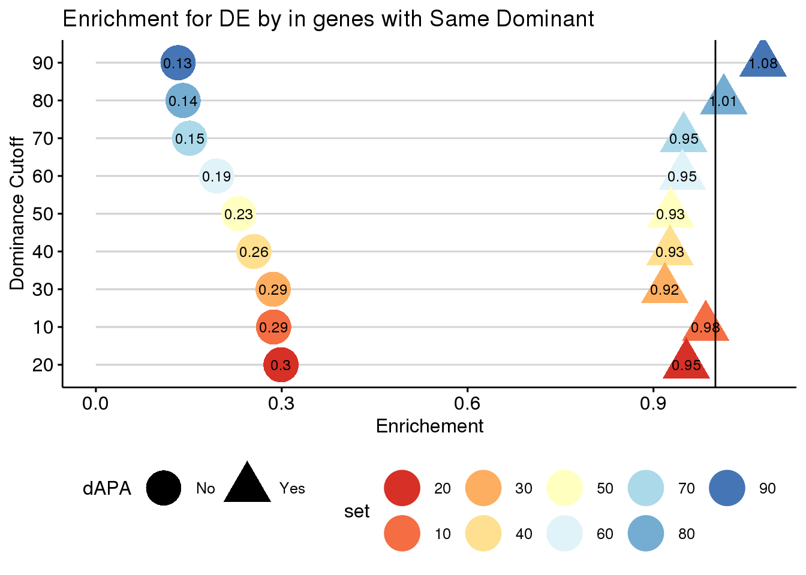
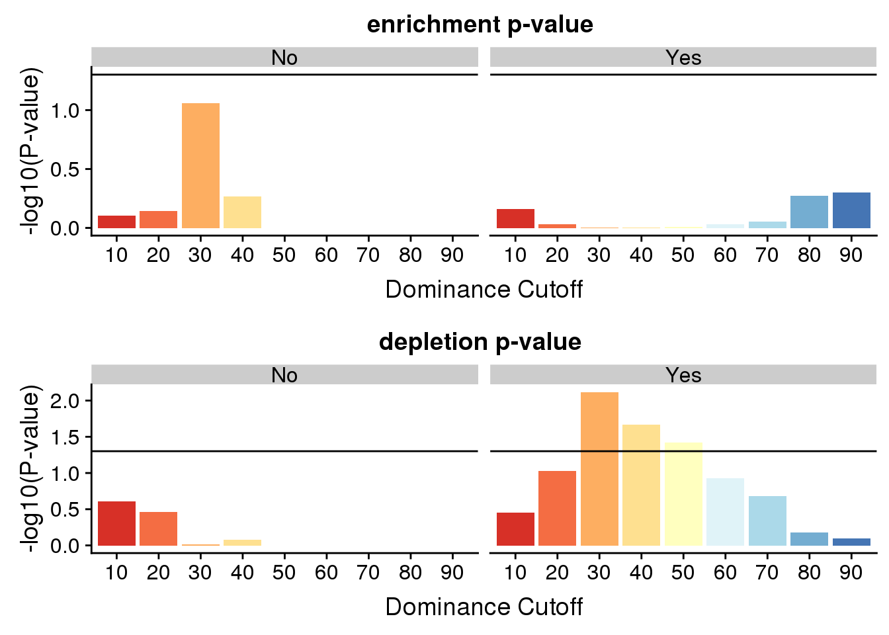
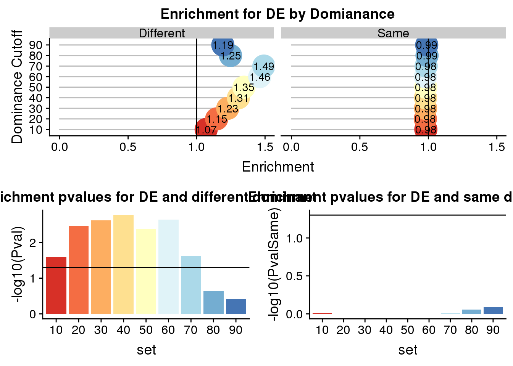

Dominant PAS and DE
Briana Mittleman
4/16/2020
Last updated: 2020-05-17
Checks: 7 0
Knit directory: Comparative_APA/analysis/
This reproducible R Markdown analysis was created with workflowr (version 1.6.0). The Checks tab describes the reproducibility checks that were applied when the results were created. The Past versions tab lists the development history.
Great! Since the R Markdown file has been committed to the Git repository, you know the exact version of the code that produced these results.
Great job! The global environment was empty. Objects defined in the global environment can affect the analysis in your R Markdown file in unknown ways. For reproduciblity it’s best to always run the code in an empty environment.
The command set.seed(20190902) was run prior to running the code in the R Markdown file. Setting a seed ensures that any results that rely on randomness, e.g. subsampling or permutations, are reproducible.
Great job! Recording the operating system, R version, and package versions is critical for reproducibility.
Nice! There were no cached chunks for this analysis, so you can be confident that you successfully produced the results during this run.
Great job! Using relative paths to the files within your workflowr project makes it easier to run your code on other machines.
Great! You are using Git for version control. Tracking code development and connecting the code version to the results is critical for reproducibility. The version displayed above was the version of the Git repository at the time these results were generated.
Note that you need to be careful to ensure that all relevant files for the analysis have been committed to Git prior to generating the results (you can use wflow_publish or wflow_git_commit). workflowr only checks the R Markdown file, but you know if there are other scripts or data files that it depends on. Below is the status of the Git repository when the results were generated:
Ignored files:
Ignored: .DS_Store
Ignored: .Rhistory
Ignored: .Rproj.user/
Ignored: code/chimp_log/
Ignored: code/human_log/
Ignored: data/.DS_Store
Ignored: data/TrialFiltersMeta.txt.sb-9845453e-R58Y0Q/
Ignored: data/mediation_prot/
Ignored: data/metadata_HCpanel.txt.sb-284518db-RGf0kd/
Ignored: data/metadata_HCpanel.txt.sb-a5794dd2-i594qs/
Ignored: output/.DS_Store
Untracked files:
Untracked: ._.DS_Store
Untracked: Chimp/
Untracked: Human/
Untracked: analysis/AREstabilityScores.Rmd
Untracked: analysis/AllLoc_effectSizeCor.Rmd
Untracked: analysis/CrossChimpThreePrime.Rmd
Untracked: analysis/DiffTransProtvsExpression.Rmd
Untracked: analysis/DiffUsedUTR.Rmd
Untracked: analysis/GvizPlots.Rmd
Untracked: analysis/HandC.TvN
Untracked: analysis/PhenotypeOverlap10.Rmd
Untracked: analysis/annotationBias.Rmd
Untracked: analysis/assessReadQual.Rmd
Untracked: analysis/diffExpressionPantro6.Rmd
Untracked: code/._AlignmentScores.sh
Untracked: code/._BothFCMM.sh
Untracked: code/._BothFCMMPrim.sh
Untracked: code/._BothFCnewOInclusive.sh
Untracked: code/._ChimpStarMM2.sh
Untracked: code/._ClassifyLeafviz.sh
Untracked: code/._ClosestorthoEx.sh
Untracked: code/._Config_chimp.yaml
Untracked: code/._Config_chimp_full.yaml
Untracked: code/._Config_human.yaml
Untracked: code/._ConvertJunc2Bed.sh
Untracked: code/._CountNucleotides.py
Untracked: code/._CrossMapChimpRNA.sh
Untracked: code/._CrossMapThreeprime.sh
Untracked: code/._DiffSplice.sh
Untracked: code/._DiffSplicePlots.sh
Untracked: code/._DiffSplicePlots_gencode.sh
Untracked: code/._DiffSplice_gencode.sh
Untracked: code/._DiffSplice_removebad.sh
Untracked: code/._Filter255MM.sh
Untracked: code/._FilterPrimSec.sh
Untracked: code/._FindIntronForDomPAS.sh
Untracked: code/._FindIntronForDomPAS_DF.sh
Untracked: code/._GetMAPQscore.py
Untracked: code/._GetSecondaryMap.py
Untracked: code/._Lift5perPAS.sh
Untracked: code/._LiftFinalChimpJunc2Human.sh
Untracked: code/._LiftOrthoPAS2chimp.sh
Untracked: code/._MapBadSamples.sh
Untracked: code/._MismatchNumbers.sh
Untracked: code/._PAS_ATTAAA.sh
Untracked: code/._PAS_ATTAAA_df.sh
Untracked: code/._PAS_seqExpanded.sh
Untracked: code/._PASsequences.sh
Untracked: code/._PASsequences_DF.sh
Untracked: code/._PlotNuclearUsagebySpecies.R
Untracked: code/._PlotNuclearUsagebySpecies_DF.R
Untracked: code/._QuantMergedClusters.sh
Untracked: code/._RNATranscriptDTplot.sh
Untracked: code/._ReverseLiftFilter.R
Untracked: code/._RunFixLeafCluster.sh
Untracked: code/._RunNegMCMediation.sh
Untracked: code/._RunNegMCMediationDF.sh
Untracked: code/._RunPosMCMediationDF.err
Untracked: code/._RunPosMCMediationDF.sh
Untracked: code/._SAF2Bed.py
Untracked: code/._Snakefile
Untracked: code/._SnakefilePAS
Untracked: code/._SnakefilePASfilt
Untracked: code/._SortIndexBadSamples.sh
Untracked: code/._StarMM2.sh
Untracked: code/._TestFC.sh
Untracked: code/._assignPeak2Intronicregion
Untracked: code/._assignPeak2Intronicregion.sh
Untracked: code/._bed215upbed.py
Untracked: code/._bed2Bedbothstrand.py
Untracked: code/._bed2SAF_gen.py
Untracked: code/._buildIndecpantro5
Untracked: code/._buildIndecpantro5.sh
Untracked: code/._buildLeafviz.sh
Untracked: code/._buildLeafviz_leadAnno.sh
Untracked: code/._buildStarIndex.sh
Untracked: code/._chimpChromprder.sh
Untracked: code/._chimpMultiCov.sh
Untracked: code/._chimpMultiCov255.sh
Untracked: code/._chimpMultiCovInclusive.sh
Untracked: code/._chooseSignalSite.py
Untracked: code/._cleanbed2saf.py
Untracked: code/._cluster.json
Untracked: code/._cluster2bed.py
Untracked: code/._clusterLiftReverse.sh
Untracked: code/._clusterLiftReverse_removebad.sh
Untracked: code/._clusterLiftprimary.sh
Untracked: code/._clusterLiftprimary_removebad.sh
Untracked: code/._converBam2Junc.sh
Untracked: code/._converBam2Junc_removeBad.sh
Untracked: code/._extraSnakefiltpas
Untracked: code/._extractPhyloReg.py
Untracked: code/._extractPhyloRegGene.py
Untracked: code/._extractPhylopGeneral.ph
Untracked: code/._extractPhylopGeneral.py
Untracked: code/._extractPhylopReg200down.py
Untracked: code/._extractPhylopReg200up.py
Untracked: code/._filter5percPAS.py
Untracked: code/._filterNumChroms.py
Untracked: code/._filterPASforMP.py
Untracked: code/._filterPostLift.py
Untracked: code/._filterPrimaryread.py
Untracked: code/._filterSecondaryread.py
Untracked: code/._fixExonFC.py
Untracked: code/._fixFCheadforExp.py
Untracked: code/._fixLeafCluster.py
Untracked: code/._fixLiftedJunc.py
Untracked: code/._fixUTRexonanno.py
Untracked: code/._formathg38Anno.py
Untracked: code/._formatpantro6Anno.py
Untracked: code/._getRNAseqMapStats.sh
Untracked: code/._hg19MapStats.sh
Untracked: code/._humanChromorder.sh
Untracked: code/._humanMultiCov.sh
Untracked: code/._humanMultiCov255.sh
Untracked: code/._humanMultiCov_inclusive.sh
Untracked: code/._intersectLiftedPAS.sh
Untracked: code/._liftJunctionFiles.sh
Untracked: code/._liftPAS19to38.sh
Untracked: code/._liftedchimpJunc2human.sh
Untracked: code/._makeNuclearDapaplots.sh
Untracked: code/._makeNuclearDapaplots_DF.sh
Untracked: code/._makeSamplyGroupsHuman_TvN.py
Untracked: code/._mapRNAseqhg19.sh
Untracked: code/._mapRNAseqhg19_newPipeline.sh
Untracked: code/._maphg19.sh
Untracked: code/._maphg19_subjunc.sh
Untracked: code/._mediation_test.R
Untracked: code/._mergeChimp3prime_inhg38.sh
Untracked: code/._mergeandBWRNAseq.sh
Untracked: code/._mergedBam2BW.sh
Untracked: code/._nameClusters.py
Untracked: code/._negativeMediation_montecarlo.R
Untracked: code/._negativeMediation_montecarloDF.R
Untracked: code/._numMultimap.py
Untracked: code/._overlapMMandOrthoexon.sh
Untracked: code/._overlapPASandOrthoexon.sh
Untracked: code/._overlapapaQTLPAS.sh
Untracked: code/._parseHg38.py
Untracked: code/._postiveMediation_montecarlo_DF.R
Untracked: code/._prepareCleanLiftedFC_5perc4LC.py
Untracked: code/._prepareLeafvizAnno.sh
Untracked: code/._preparePAS4lift.py
Untracked: code/._primaryLift.sh
Untracked: code/._processhg38exons.py
Untracked: code/._quantJunc.sh
Untracked: code/._quantJunc_TEST.sh
Untracked: code/._quantJunc_removeBad.sh
Untracked: code/._quantLiftedPASPrimary.sh
Untracked: code/._quantMerged_seperatly.sh
Untracked: code/._recLiftchim2human.sh
Untracked: code/._revLiftPAShg38to19.sh
Untracked: code/._reverseLift.sh
Untracked: code/._runCheckReverseLift.sh
Untracked: code/._runChimpDiffIso.sh
Untracked: code/._runCountNucleotides.sh
Untracked: code/._runFilterNumChroms.sh
Untracked: code/._runHumanDiffIso.sh
Untracked: code/._runNuclearDiffIso_DF.sh
Untracked: code/._runNuclearDifffIso.sh
Untracked: code/._runTotalDiffIso.sh
Untracked: code/._run_chimpverifybam.sh
Untracked: code/._run_verifyBam.sh
Untracked: code/._snakemake.batch
Untracked: code/._snakemakePAS.batch
Untracked: code/._snakemakePASchimp.batch
Untracked: code/._snakemakePAShuman.batch
Untracked: code/._snakemake_chimp.batch
Untracked: code/._snakemake_human.batch
Untracked: code/._snakemakefiltPAS.batch
Untracked: code/._snakemakefiltPAS_chimp
Untracked: code/._snakemakefiltPAS_chimp.sh
Untracked: code/._snakemakefiltPAS_human.sh
Untracked: code/._spliceSite2Fasta.py
Untracked: code/._submit-snakemake-chimp.sh
Untracked: code/._submit-snakemake-human.sh
Untracked: code/._submit-snakemakePAS-chimp.sh
Untracked: code/._submit-snakemakePAS-human.sh
Untracked: code/._submit-snakemakefiltPAS-chimp.sh
Untracked: code/._submit-snakemakefiltPAS-human.sh
Untracked: code/._subset_diffisopheno_Nuclear_HvC.py
Untracked: code/._subset_diffisopheno_Nuclear_HvC_DF.py
Untracked: code/._subset_diffisopheno_Total_HvC.py
Untracked: code/._threeprimeOrthoFC.sh
Untracked: code/._transcriptDTplotsNuclear.sh
Untracked: code/._verifyBam4973.sh
Untracked: code/._verifyBam4973inHuman.sh
Untracked: code/._wrap_chimpverifybam.sh
Untracked: code/._wrap_verifyBam.sh
Untracked: code/._writeMergecode.py
Untracked: code/.snakemake/
Untracked: code/ALLPAS_sequenceDF.err
Untracked: code/ALLPAS_sequenceDF.out
Untracked: code/AlignmentScores.err
Untracked: code/AlignmentScores.out
Untracked: code/AlignmentScores.sh
Untracked: code/BothFCMM.err
Untracked: code/BothFCMM.out
Untracked: code/BothFCMM.sh
Untracked: code/BothFCMMPrim.err
Untracked: code/BothFCMMPrim.out
Untracked: code/BothFCMMPrim.sh
Untracked: code/BothFCnewOInclusive.sh
Untracked: code/BothFCnewOInclusive.sh.err
Untracked: code/BothFCnewOInclusive.sh.out
Untracked: code/ChimpStarMM2.err
Untracked: code/ChimpStarMM2.out
Untracked: code/ChimpStarMM2.sh
Untracked: code/ClassifyLeafviz.sh
Untracked: code/ClosestorthoEx.err
Untracked: code/ClosestorthoEx.out
Untracked: code/ClosestorthoEx.sh
Untracked: code/Config_chimp.yaml
Untracked: code/Config_chimp_full.yaml
Untracked: code/Config_human.yaml
Untracked: code/ConvertJunc2Bed.err
Untracked: code/ConvertJunc2Bed.out
Untracked: code/ConvertJunc2Bed.sh
Untracked: code/CountNucleotides.py
Untracked: code/CrossMapChimpRNA.sh
Untracked: code/CrossMapThreeprime.sh
Untracked: code/CrossmapChimp3prime.err
Untracked: code/CrossmapChimp3prime.out
Untracked: code/CrossmapChimpRNA.err
Untracked: code/CrossmapChimpRNA.out
Untracked: code/DTUTR.sh
Untracked: code/DiffDom_RNAmotif_4.err
Untracked: code/DiffDom_RNAmotif_4.out
Untracked: code/DiffDom_RNAmotif_4.sh
Untracked: code/DiffDom_RNAmotif_4_splitDE.err
Untracked: code/DiffDom_RNAmotif_4_splitDE.out
Untracked: code/DiffDom_RNAmotif_4_splitDE.sh
Untracked: code/DiffSplice.err
Untracked: code/DiffSplice.out
Untracked: code/DiffSplice.sh
Untracked: code/DiffSplicePlots.err
Untracked: code/DiffSplicePlots.out
Untracked: code/DiffSplicePlots.sh
Untracked: code/DiffSplicePlots_gencode.sh
Untracked: code/DiffSplice_gencode.sh
Untracked: code/DiffSplice_removebad.err
Untracked: code/DiffSplice_removebad.out
Untracked: code/DiffSplice_removebad.sh
Untracked: code/Filter255.err
Untracked: code/Filter255.out
Untracked: code/Filter255MM.sh
Untracked: code/FilterPrimSec.err
Untracked: code/FilterPrimSec.out
Untracked: code/FilterPrimSec.sh
Untracked: code/FilterReverseLift.err
Untracked: code/FilterReverseLift.out
Untracked: code/FindDomXCutoff.py
Untracked: code/FindIntronForDomPAS.err
Untracked: code/FindIntronForDomPAS.out
Untracked: code/FindIntronForDomPAS.sh
Untracked: code/FindIntronForDomPAS_DF.sh
Untracked: code/GencodeDiffSplice.err
Untracked: code/GencodeDiffSplice.out
Untracked: code/GetMAPQscore.py
Untracked: code/GetSecondaryMap.py
Untracked: code/GetTopminus2Usage.py
Untracked: code/H3K36me3DTplot.err
Untracked: code/H3K36me3DTplot.out
Untracked: code/H3K36me3DTplot.sh
Untracked: code/H3K36me3DTplot_DiffIso.err
Untracked: code/H3K36me3DTplot_DiffIso.out
Untracked: code/H3K36me3DTplot_DiffIso.sh
Untracked: code/H3K36me3DTplot_Specific.err
Untracked: code/H3K36me3DTplot_Specific.out
Untracked: code/H3K36me3DTplot_Specific.sh
Untracked: code/H3K36me3DTplot_distalPAS.err
Untracked: code/H3K36me3DTplot_distalPAS.out
Untracked: code/H3K36me3DTplot_distalPAS.sh
Untracked: code/H3K36me3DTplot_transcript.err
Untracked: code/H3K36me3DTplot_transcript.out
Untracked: code/H3K36me3DTplot_transcript.sh
Untracked: code/H3K36me3DTplotwide.err
Untracked: code/H3K36me3DTplotwide.out
Untracked: code/H3K36me3DTplotwide.sh
Untracked: code/H3K9me3DTplot_transcript.err
Untracked: code/H3K9me3DTplot_transcript.out
Untracked: code/H3K9me3DTplot_transcript.sh
Untracked: code/H3K9me3_processandDT.sh
Untracked: code/HchromOrder.err
Untracked: code/HchromOrder.out
Untracked: code/InfoContentShannon.py
Untracked: code/InfoContentbyInd.py
Untracked: code/IntersectMMandOrtho.err
Untracked: code/IntersectMMandOrtho.out
Untracked: code/IntersectPASandOrtho.err
Untracked: code/IntersectPASandOrtho.out
Untracked: code/JunctionLift.err
Untracked: code/JunctionLift.out
Untracked: code/JunctionLiftFinalChimp.err
Untracked: code/JunctionLiftFinalChimp.out
Untracked: code/Lift5perPAS.sh
Untracked: code/Lift5perPASbed.err
Untracked: code/Lift5perPASbed.out
Untracked: code/LiftClustersFirst.err
Untracked: code/LiftClustersFirst.out
Untracked: code/LiftClustersFirst_remove.err
Untracked: code/LiftClustersFirst_remove.out
Untracked: code/LiftClustersSecond.err
Untracked: code/LiftClustersSecond.out
Untracked: code/LiftClustersSecond_remove.err
Untracked: code/LiftClustersSecond_remove.out
Untracked: code/LiftFinalChimpJunc2Human.sh
Untracked: code/LiftOrthoPAS2chimp.sh
Untracked: code/LiftorthoPAS.err
Untracked: code/LiftorthoPASt.out
Untracked: code/Log.out
Untracked: code/MapBadSamples.err
Untracked: code/MapBadSamples.out
Untracked: code/MapBadSamples.sh
Untracked: code/MapStats.err
Untracked: code/MapStats.out
Untracked: code/MaxEntCode/
Untracked: code/MergeClusters.err
Untracked: code/MergeClusters.out
Untracked: code/MergeClusters.sh
Untracked: code/MismatchNumbers.err
Untracked: code/MismatchNumbers.out
Untracked: code/MismatchNumbers.sh
Untracked: code/NuclearDTUTR.err
Untracked: code/NuclearDTUTRt.out
Untracked: code/NuclearPlotsDEandDiffDom_4.err
Untracked: code/NuclearPlotsDEandDiffDom_4.out
Untracked: code/NuclearPlotsDEandDiffDom_4.sh
Untracked: code/PAS_ATTAAA.err
Untracked: code/PAS_ATTAAA.out
Untracked: code/PAS_ATTAAA.sh
Untracked: code/PAS_ATTAAADF.err
Untracked: code/PAS_ATTAAADF.out
Untracked: code/PAS_ATTAAA_df.sh
Untracked: code/PAS_seqExpanded.sh
Untracked: code/PAS_sequence.err
Untracked: code/PAS_sequence.out
Untracked: code/PAS_sequenceDF.err
Untracked: code/PAS_sequenceDF.out
Untracked: code/PASexpanded_sequenceDF.err
Untracked: code/PASexpanded_sequenceDF.out
Untracked: code/PASsequences.sh
Untracked: code/PASsequences_DF.sh
Untracked: code/PlotNuclearUsagebySpecies.R
Untracked: code/PlotNuclearUsagebySpecies_DF.R
Untracked: code/PlotNuclearUsagebySpecies_DF_4DIC.R
Untracked: code/PlotNuclearUsagebySpecies_DF_DEout.R
Untracked: code/QuantMergeClusters
Untracked: code/QuantMergeClusters.err
Untracked: code/QuantMergeClusters.out
Untracked: code/QuantMergedClusters.sh
Untracked: code/RNATranscriptDTplot.err
Untracked: code/RNATranscriptDTplot.out
Untracked: code/RNATranscriptDTplot.sh
Untracked: code/RNAmotif_PAS.err
Untracked: code/RNAmotif_PAS.out
Untracked: code/RNAmotif_PAS.sh
Untracked: code/RNAmotif_PAS_chimp.err
Untracked: code/RNAmotif_PAS_chimp.out
Untracked: code/RNAmotif_PAS_chimp.sh
Untracked: code/Rev_liftoverPAShg19to38.err
Untracked: code/Rev_liftoverPAShg19to38.out
Untracked: code/ReverseLiftFilter.R
Untracked: code/RunFixCluster.err
Untracked: code/RunFixCluster.out
Untracked: code/RunFixLeafCluster.sh
Untracked: code/RunNegMCMediation.err
Untracked: code/RunNegMCMediation.sh
Untracked: code/RunNegMCMediationDF.err
Untracked: code/RunNegMCMediationDF.out
Untracked: code/RunNegMCMediationDF.sh
Untracked: code/RunNegMCMediationr.out
Untracked: code/RunNewDom.err
Untracked: code/RunNewDom.out
Untracked: code/RunPosMCMediation.err
Untracked: code/RunPosMCMediation.sh
Untracked: code/RunPosMCMediationDF.err
Untracked: code/RunPosMCMediationDF.out
Untracked: code/RunPosMCMediationDF.sh
Untracked: code/RunPosMCMediationr.out
Untracked: code/SAF215upbed_gen.py
Untracked: code/SAF2Bed.py
Untracked: code/Snakefile
Untracked: code/SnakefilePAS
Untracked: code/SnakefilePASfilt
Untracked: code/SortIndexBadSamples.err
Untracked: code/SortIndexBadSamples.out
Untracked: code/SortIndexBadSamples.sh
Untracked: code/StarMM2.err
Untracked: code/StarMM2.out
Untracked: code/StarMM2.sh
Untracked: code/TestFC.err
Untracked: code/TestFC.out
Untracked: code/TestFC.sh
Untracked: code/TotalTranscriptDTplot.err
Untracked: code/TotalTranscriptDTplot.out
Untracked: code/UTR2FASTA.py
Untracked: code/Upstream10Bases_general.py
Untracked: code/allPASSeq_df.sh
Untracked: code/apaQTLsnake.err
Untracked: code/apaQTLsnake.out
Untracked: code/apaQTLsnakePAS.err
Untracked: code/apaQTLsnakePAS.out
Untracked: code/apaQTLsnakePAShuman.err
Untracked: code/apaQTLsnakefiltPAS.err
Untracked: code/apaQTLsnakefiltPAS.out
Untracked: code/assignPeak2Intronicregion.err
Untracked: code/assignPeak2Intronicregion.out
Untracked: code/assignPeak2Intronicregion.sh
Untracked: code/bam2junc.err
Untracked: code/bam2junc.out
Untracked: code/bam2junc_remove.err
Untracked: code/bam2junc_remove.out
Untracked: code/bed215upbed.py
Untracked: code/bed2Bedbothstrand.py
Untracked: code/bed2SAF_gen.py
Untracked: code/bed2saf.py
Untracked: code/bg_to_cov.py
Untracked: code/buildIndecpantro5
Untracked: code/buildIndecpantro5.sh
Untracked: code/buildLeafviz.err
Untracked: code/buildLeafviz.out
Untracked: code/buildLeafviz.sh
Untracked: code/buildLeafviz_leadAnno.sh
Untracked: code/buildLeafviz_leafanno.err
Untracked: code/buildLeafviz_leafanno.out
Untracked: code/buildStarIndex.sh
Untracked: code/callPeaksYL.py
Untracked: code/chimpChromprder.sh
Untracked: code/chimpMultiCov.err
Untracked: code/chimpMultiCov.out
Untracked: code/chimpMultiCov.sh
Untracked: code/chimpMultiCov255.sh
Untracked: code/chimpMultiCovInclusive.err
Untracked: code/chimpMultiCovInclusive.out
Untracked: code/chimpMultiCovInclusive.sh
Untracked: code/chooseAnno2Bed.py
Untracked: code/chooseAnno2SAF.py
Untracked: code/chooseSignalSite.py
Untracked: code/chromOrder.err
Untracked: code/chromOrder.out
Untracked: code/classifyLeafviz.err
Untracked: code/classifyLeafviz.out
Untracked: code/cleanbed2saf.py
Untracked: code/cluster.json
Untracked: code/cluster2bed.py
Untracked: code/clusterLiftReverse.sh
Untracked: code/clusterLiftReverse_removebad.sh
Untracked: code/clusterLiftprimary.sh
Untracked: code/clusterLiftprimary_removebad.sh
Untracked: code/clusterPAS.json
Untracked: code/clusterfiltPAS.json
Untracked: code/comands2Mege.sh
Untracked: code/converBam2Junc.sh
Untracked: code/converBam2Junc_removeBad.sh
Untracked: code/convertNumeric.py
Untracked: code/environment.yaml
Untracked: code/extraSnakefiltpas
Untracked: code/extractPhaastConGeneral.py
Untracked: code/extractPhyloReg.py
Untracked: code/extractPhyloRegGene.py
Untracked: code/extractPhylopGeneral.py
Untracked: code/extractPhylopReg200down.py
Untracked: code/extractPhylopReg200up.py
Untracked: code/filter5perc.R
Untracked: code/filter5percPAS.py
Untracked: code/filter5percPheno.py
Untracked: code/filterBamforMP.pysam2_gen.py
Untracked: code/filterJuncChroms.err
Untracked: code/filterJuncChroms.out
Untracked: code/filterMissprimingInNuc10_gen.py
Untracked: code/filterNumChroms.py
Untracked: code/filterPASforMP.py
Untracked: code/filterPostLift.py
Untracked: code/filterPrimaryread.py
Untracked: code/filterSAFforMP_gen.py
Untracked: code/filterSecondaryread.py
Untracked: code/filterSortBedbyCleanedBed_gen.R
Untracked: code/filterpeaks.py
Untracked: code/fixExonFC.py
Untracked: code/fixFChead.py
Untracked: code/fixFChead_bothfrac.py
Untracked: code/fixFCheadforExp.py
Untracked: code/fixLeafCluster.py
Untracked: code/fixLiftedJunc.py
Untracked: code/fixUTRexonanno.py
Untracked: code/formathg38Anno.py
Untracked: code/generateStarIndex.err
Untracked: code/generateStarIndex.out
Untracked: code/generateStarIndexHuman.err
Untracked: code/generateStarIndexHuman.out
Untracked: code/getAlloverlap.py
Untracked: code/getRNAseqMapStats.sh
Untracked: code/hg19MapStats.err
Untracked: code/hg19MapStats.out
Untracked: code/hg19MapStats.sh
Untracked: code/humanChromorder.sh
Untracked: code/humanFiles
Untracked: code/humanMultiCov.err
Untracked: code/humanMultiCov.out
Untracked: code/humanMultiCov.sh
Untracked: code/humanMultiCov255.err
Untracked: code/humanMultiCov255.out
Untracked: code/humanMultiCov255.sh
Untracked: code/humanMultiCovInclusive.err
Untracked: code/humanMultiCovInclusive.out
Untracked: code/humanMultiCov_inclusive.sh
Untracked: code/infoContentSimpson.py
Untracked: code/intersectAnno.err
Untracked: code/intersectAnno.out
Untracked: code/intersectAnnoExt.err
Untracked: code/intersectAnnoExt.out
Untracked: code/intersectLiftedPAS.sh
Untracked: code/leafcutter_merge_regtools_redo.py
Untracked: code/liftJunctionFiles.sh
Untracked: code/liftPAS19to38.sh
Untracked: code/liftoverPAShg19to38.err
Untracked: code/liftoverPAShg19to38.out
Untracked: code/log/
Untracked: code/make5percPeakbed.py
Untracked: code/makeDIC.err
Untracked: code/makeDIC.out
Untracked: code/makeFileID.py
Untracked: code/makeNuclearDapaplots.sh
Untracked: code/makeNuclearDapaplots_DF.sh
Untracked: code/makeNuclearPlots.err
Untracked: code/makeNuclearPlots.out
Untracked: code/makeNuclearPlotsDF.err
Untracked: code/makeNuclearPlotsDF.out
Untracked: code/makePheno.py
Untracked: code/makeSamplyGroupsChimp_TvN.py
Untracked: code/makeSamplyGroupsHuman_TvN.py
Untracked: code/makedICPlots_DF.sh
Untracked: code/mapRNAseqhg19.sh
Untracked: code/mapRNAseqhg19_newPipeline.sh
Untracked: code/maphg19.err
Untracked: code/maphg19.out
Untracked: code/maphg19.sh
Untracked: code/maphg19_new.err
Untracked: code/maphg19_new.out
Untracked: code/maphg19_sub.err
Untracked: code/maphg19_sub.out
Untracked: code/maphg19_subjunc.sh
Untracked: code/mediation_test.R
Untracked: code/merge.err
Untracked: code/mergeChimp3prime_inhg38.sh
Untracked: code/mergeChimpRNA.sh
Untracked: code/merge_leafcutter_clusters_redo.py
Untracked: code/mergeandBWRNAseq.sh
Untracked: code/mergeandsort_ChimpinHuman.err
Untracked: code/mergeandsort_ChimpinHuman.out
Untracked: code/mergeandsort_H3K9me3
Untracked: code/mergeandsort_h3k36me3
Untracked: code/mergeandsorth3k36me3.sh
Untracked: code/mergedBam2BW.sh
Untracked: code/mergedbam2bw.err
Untracked: code/mergedbam2bw.out
Untracked: code/mergedbamRNAand2bw.err
Untracked: code/mergedbamRNAand2bw.out
Untracked: code/nameClusters.py
Untracked: code/namePeaks.py
Untracked: code/negativeMediation_montecarlo.R
Untracked: code/negativeMediation_montecarloDF.R
Untracked: code/nuclearTranscriptDTplot.err
Untracked: code/nuclearTranscriptDTplot.out
Untracked: code/numMultimap.py
Untracked: code/overlapMMandOrthoexon.sh
Untracked: code/overlapPAS.err
Untracked: code/overlapPAS.out
Untracked: code/overlapPASandOrthoexon.sh
Untracked: code/overlapapaQTLPAS.sh
Untracked: code/overlapapaQTLPAS_extended.sh
Untracked: code/overlapapaQTLPAS_samples.sh
Untracked: code/parseHg38.py
Untracked: code/peak2PAS.py
Untracked: code/pheno2countonly.R
Untracked: code/postiveMediation_montecarlo.R
Untracked: code/postiveMediation_montecarlo_DF.R
Untracked: code/prepareAnnoLeafviz.err
Untracked: code/prepareAnnoLeafviz.out
Untracked: code/prepareCleanLiftedFC_5perc4LC.py
Untracked: code/prepareLeafvizAnno.sh
Untracked: code/preparePAS4lift.py
Untracked: code/prepare_phenotype_table.py
Untracked: code/primaryLift.err
Untracked: code/primaryLift.out
Untracked: code/primaryLift.sh
Untracked: code/processhg38exons.py
Untracked: code/quantJunc.sh
Untracked: code/quantJunc_TEST.sh
Untracked: code/quantJunc_removeBad.sh
Untracked: code/quantLiftedPAS.err
Untracked: code/quantLiftedPAS.out
Untracked: code/quantLiftedPAS.sh
Untracked: code/quantLiftedPASPrimary.err
Untracked: code/quantLiftedPASPrimary.out
Untracked: code/quantLiftedPASPrimary.sh
Untracked: code/quatJunc.err
Untracked: code/quatJunc.out
Untracked: code/recChimpback2Human.err
Untracked: code/recChimpback2Human.out
Untracked: code/recLiftchim2human.sh
Untracked: code/revLift.err
Untracked: code/revLift.out
Untracked: code/revLiftPAShg38to19.sh
Untracked: code/reverseLift.sh
Untracked: code/runCheckReverseLift.sh
Untracked: code/runChimpDiffIso.sh
Untracked: code/runChimpDiffIsoDF.sh
Untracked: code/runCountNucleotides.err
Untracked: code/runCountNucleotides.out
Untracked: code/runCountNucleotides.sh
Untracked: code/runCountNucleotidesPantro6.err
Untracked: code/runCountNucleotidesPantro6.out
Untracked: code/runCountNucleotides_pantro6.sh
Untracked: code/runFilterNumChroms.sh
Untracked: code/runHumanDiffIso.sh
Untracked: code/runHumanDiffIsoDF.sh
Untracked: code/runNewDom.sh
Untracked: code/runNuclearDiffIso_DF.sh
Untracked: code/runNuclearDifffIso.sh
Untracked: code/runTotalDiffIso.sh
Untracked: code/run_Chimpleafcutter_ds.err
Untracked: code/run_Chimpleafcutter_ds.out
Untracked: code/run_Chimpverifybam.err
Untracked: code/run_Chimpverifybam.out
Untracked: code/run_Humanleafcutter_dF.err
Untracked: code/run_Humanleafcutter_dF.out
Untracked: code/run_Humanleafcutter_ds.err
Untracked: code/run_Humanleafcutter_ds.out
Untracked: code/run_Nuclearleafcutter_ds.err
Untracked: code/run_Nuclearleafcutter_ds.out
Untracked: code/run_Nuclearleafcutter_dsDF.err
Untracked: code/run_Nuclearleafcutter_dsDF.out
Untracked: code/run_Totalleafcutter_ds.err
Untracked: code/run_Totalleafcutter_ds.out
Untracked: code/run_chimpverifybam.sh
Untracked: code/run_verifyBam.sh
Untracked: code/run_verifybam.err
Untracked: code/run_verifybam.out
Untracked: code/slurm-62824013.out
Untracked: code/slurm-62825841.out
Untracked: code/slurm-62826116.out
Untracked: code/slurm-64108209.out
Untracked: code/slurm-64108521.out
Untracked: code/slurm-64108557.out
Untracked: code/snakePASChimp.err
Untracked: code/snakePASChimp.out
Untracked: code/snakePAShuman.out
Untracked: code/snakemake.batch
Untracked: code/snakemakeChimp.err
Untracked: code/snakemakeChimp.out
Untracked: code/snakemakeHuman.err
Untracked: code/snakemakeHuman.out
Untracked: code/snakemakePAS.batch
Untracked: code/snakemakePASFiltChimp.err
Untracked: code/snakemakePASFiltChimp.out
Untracked: code/snakemakePASFiltHuman.err
Untracked: code/snakemakePASFiltHuman.out
Untracked: code/snakemakePAS_Human.batch
Untracked: code/snakemakePASchimp.batch
Untracked: code/snakemakePAShuman.batch
Untracked: code/snakemake_chimp.batch
Untracked: code/snakemake_human.batch
Untracked: code/snakemakefiltPAS.batch
Untracked: code/snakemakefiltPAS_chimp.sh
Untracked: code/snakemakefiltPAS_human.batch
Untracked: code/snakemakefiltPAS_human.sh
Untracked: code/spliceSite2Fasta.py
Untracked: code/submit-snakemake-chimp.sh
Untracked: code/submit-snakemake-human.sh
Untracked: code/submit-snakemakePAS-chimp.sh
Untracked: code/submit-snakemakePAS-human.sh
Untracked: code/submit-snakemakefiltPAS-chimp.sh
Untracked: code/submit-snakemakefiltPAS-human.sh
Untracked: code/subset_diffisopheno.py
Untracked: code/subset_diffisopheno_Chimp_tvN.py
Untracked: code/subset_diffisopheno_Chimp_tvN_DF.py
Untracked: code/subset_diffisopheno_Huma_tvN.py
Untracked: code/subset_diffisopheno_Huma_tvN_DF.py
Untracked: code/subset_diffisopheno_Nuclear_HvC.py
Untracked: code/subset_diffisopheno_Nuclear_HvC_DF.py
Untracked: code/subset_diffisopheno_Total_HvC.py
Untracked: code/test
Untracked: code/test.txt
Untracked: code/threeprimeOrthoFC.out
Untracked: code/threeprimeOrthoFC.sh
Untracked: code/threeprimeOrthoFCcd.err
Untracked: code/transcriptDTplotsNuclear.sh
Untracked: code/transcriptDTplotsTotal.sh
Untracked: code/verifyBam4973.sh
Untracked: code/verifyBam4973inHuman.sh
Untracked: code/verifybam4973.err
Untracked: code/verifybam4973.out
Untracked: code/verifybam4973HumanMap.err
Untracked: code/verifybam4973HumanMap.out
Untracked: code/wrap_Chimpverifybam.err
Untracked: code/wrap_Chimpverifybam.out
Untracked: code/wrap_chimpverifybam.sh
Untracked: code/wrap_verifyBam.sh
Untracked: code/wrap_verifybam.err
Untracked: code/wrap_verifybam.out
Untracked: code/writeMergecode.py
Untracked: data/._.DS_Store
Untracked: data/._HC_filenames.txt
Untracked: data/._HC_filenames.txt.sb-4426323c-IKIs0S
Untracked: data/._HC_filenames.xlsx
Untracked: data/._MapPantro6_meta.txt
Untracked: data/._MapPantro6_meta.txt.sb-a5794dd2-Cskmlm
Untracked: data/._MapPantro6_meta.xlsx
Untracked: data/._OppositeSpeciesMap.txt
Untracked: data/._OppositeSpeciesMap.txt.sb-a5794dd2-mayWJf
Untracked: data/._OppositeSpeciesMap.xlsx
Untracked: data/._RNASEQ_metadata.txt
Untracked: data/._RNASEQ_metadata.txt.sb-4426323c-TE4ns3
Untracked: data/._RNASEQ_metadata.txt.sb-51f67ae1-HXp7Gq
Untracked: data/._RNASEQ_metadata_2Removed.txt
Untracked: data/._RNASEQ_metadata_2Removed.txt.sb-4426323c-a4lBwx
Untracked: data/._RNASEQ_metadata_2Removed.xlsx
Untracked: data/._RNASEQ_metadata_stranded.txt
Untracked: data/._RNASEQ_metadata_stranded.txt.sb-a5794dd2-D659m2
Untracked: data/._RNASEQ_metadata_stranded.txt.sb-a5794dd2-ImNMoY
Untracked: data/._RNASEQ_metadata_stranded.txt.sb-e4bf31f0-ZGnGgl
Untracked: data/._RNASEQ_metadata_stranded.xlsx
Untracked: data/._TrialFiltersMeta.txt
Untracked: data/._TrialFiltersMeta.txt.sb-9845453e-R58Y0Q
Untracked: data/._metadata_HCpanel.txt
Untracked: data/._metadata_HCpanel.txt.sb-a3d92a2d-b9cYoF
Untracked: data/._metadata_HCpanel.txt.sb-a5794dd2-i594qs
Untracked: data/._metadata_HCpanel.txt.sb-f4823d1e-qihGek
Untracked: data/._metadata_HCpanel_frompantro5.xlsx
Untracked: data/._~$RNASEQ_metadata.xlsx
Untracked: data/._~$metadata_HCpanel.xlsx
Untracked: data/._.xlsx
Untracked: data/AREelements/
Untracked: data/BaseComp/
Untracked: data/CleanLiftedPeaks_FC_primary/
Untracked: data/CompapaQTLpas/
Untracked: data/DIC_Viz/
Untracked: data/DNDS/
Untracked: data/DTmatrix/
Untracked: data/DiffDomandDE_example/
Untracked: data/DiffExpression/
Untracked: data/DiffIso_Nuclear/
Untracked: data/DiffIso_Nuclear_DF/
Untracked: data/DiffIso_Total/
Untracked: data/DiffSplice/
Untracked: data/DiffSplice_liftedJunc/
Untracked: data/DiffSplice_removeBad/
Untracked: data/DistTwoDom/
Untracked: data/DomDefGreaterX/
Untracked: data/DomStructure_4/
Untracked: data/DominantPAS/
Untracked: data/DominantPAS_DF/
Untracked: data/DoubleFilterUsageNumeric/
Untracked: data/EvalPantro5/
Untracked: data/H3K36me3/
Untracked: data/HC_filenames.txt
Untracked: data/HC_filenames.xlsx
Untracked: data/HumanMolPheno/
Untracked: data/IndInfoContent/
Untracked: data/InfoContent/
Untracked: data/Khan_prot/
Untracked: data/Li_eqtls/
Untracked: data/MapPantro6_meta.txt
Untracked: data/MapPantro6_meta.xlsx
Untracked: data/MapStats/
Untracked: data/NormalizedClusters/
Untracked: data/NuclearHvC/
Untracked: data/NuclearHvC_DF/
Untracked: data/OppositeSpeciesMap.txt
Untracked: data/OppositeSpeciesMap.xlsx
Untracked: data/OrthoExonBed/
Untracked: data/OverlapBenchmark/
Untracked: data/OverlappingPAS/
Untracked: data/PAS/
Untracked: data/PAS_SAF/
Untracked: data/PAS_doubleFilter/
Untracked: data/Peaks_5perc/
Untracked: data/PhastCon/
Untracked: data/Pheno_5perc/
Untracked: data/Pheno_5perc_DF_nuclear/
Untracked: data/Pheno_5perc_nuclear/
Untracked: data/Pheno_5perc_nuclear_old/
Untracked: data/Pheno_5perc_total/
Untracked: data/PhyloP/
Untracked: data/Pol2Chip/
Untracked: data/RNASEQ_metadata.txt
Untracked: data/RNASEQ_metadata_2Removed.txt
Untracked: data/RNASEQ_metadata_2Removed.xlsx
Untracked: data/RNASEQ_metadata_stranded.txt
Untracked: data/RNASEQ_metadata_stranded.txt.sb-e4bf31f0-ZGnGgl/
Untracked: data/RNASEQ_metadata_stranded.xlsx
Untracked: data/SignalSites/
Untracked: data/SignalSites_doublefilter/
Untracked: data/SpliceSite/
Untracked: data/TestAnnoBiasOE/
Untracked: data/TestMM2/
Untracked: data/TestMM2_AS/
Untracked: data/TestMM2_PrimaryRead/
Untracked: data/TestMM2_SeondaryRead/
Untracked: data/TestMM2_mismatch/
Untracked: data/TestMM2_quality/
Untracked: data/TestWithinMergePAS/
Untracked: data/Test_FC_methods/
Untracked: data/Threeprime2Ortho/
Untracked: data/TotalFractionPAS/
Untracked: data/TotalHvC/
Untracked: data/TrialFiltersMeta.txt
Untracked: data/TwoBadSampleAnalysis/
Untracked: data/Wang_ribo/
Untracked: data/apaQTLGenes/
Untracked: data/bioGRID/
Untracked: data/chainFiles/
Untracked: data/cleanPeaks_anno/
Untracked: data/cleanPeaks_byspecies/
Untracked: data/cleanPeaks_lifted/
Untracked: data/files4viz_nuclear/
Untracked: data/files4viz_nuclear_DF/
Untracked: data/gviz/
Untracked: data/leafviz/
Untracked: data/liftover_files/
Untracked: data/mediation/
Untracked: data/mediation_DF/
Untracked: data/metadata_HCpanel.txt
Untracked: data/metadata_HCpanel.xlsx
Untracked: data/metadata_HCpanel_extra.txt
Untracked: data/metadata_HCpanel_frompantro5.txt
Untracked: data/metadata_HCpanel_frompantro5.xlsx
Untracked: data/miRNA/
Untracked: data/multimap/
Untracked: data/orthoUTR/
Untracked: data/paiDecay/
Untracked: data/primaryLift/
Untracked: data/reverseLift/
Untracked: data/testQuant/
Untracked: data/~$RNASEQ_metadata.xlsx
Untracked: data/~$metadata_HCpanel.xlsx
Untracked: data/.xlsx
Untracked: output/._.DS_Store
Untracked: output/dAPAandDomEnrich.png
Untracked: output/dEandDomEnrich.png
Untracked: output/dtPlots/
Untracked: projectNotes.Rmd
Untracked: proteinModelSet.Rmd
Unstaged changes:
Modified: analysis/DICNotDEDP.Rmd
Modified: analysis/DeandNumPAS.Rmd
Modified: analysis/DiffTop2SecondDom.Rmd
Modified: analysis/DirSelectionKhan.Rmd
Modified: analysis/ExploredAPA.Rmd
Modified: analysis/MMExpreiment.Rmd
Modified: analysis/OppositeMap.Rmd
Modified: analysis/PTM_analysis.Rmd
Modified: analysis/TotalDomStructure.Rmd
Modified: analysis/TotalVNuclearBothSpecies.Rmd
Modified: analysis/annotationInfo.Rmd
Modified: analysis/changeMisprimcut.Rmd
Modified: analysis/comp2apaQTLPAS.Rmd
Modified: analysis/correlationPhenos.Rmd
Modified: analysis/dInforContent.Rmd
Modified: analysis/diffExpression.Rmd
Modified: analysis/establishCutoffs.Rmd
Modified: analysis/investigatePantro5.Rmd
Modified: analysis/mRNADecay.Rmd
Modified: analysis/multiMap.Rmd
Modified: analysis/phastCon.Rmd
Modified: analysis/pol2.Rmd
Modified: analysis/signalsites_doublefilter.Rmd
Modified: analysis/speciesSpecific.Rmd
Note that any generated files, e.g. HTML, png, CSS, etc., are not included in this status report because it is ok for generated content to have uncommitted changes.
These are the previous versions of the R Markdown and HTML files. If you’ve configured a remote Git repository (see ?wflow_git_remote), click on the hyperlinks in the table below to view them.
| File | Version | Author | Date | Message |
|---|---|---|---|---|
| Rmd | 4b2ff4a | brimittleman | 2020-05-17 | add loc enrich and diff dom plot |
| html | cb0a024 | brimittleman | 2020-04-30 | Build site. |
| Rmd | c253b1b | brimittleman | 2020-04-30 | fix same no dapa bug, change simp color |
| html | 69e8fd5 | brimittleman | 2020-04-28 | Build site. |
| Rmd | 132a716 | brimittleman | 2020-04-28 | make my own dot plots |
| html | 7725e4d | brimittleman | 2020-04-27 | Build site. |
| Rmd | b653f27 | brimittleman | 2020-04-27 | add simpson |
| html | 961b808 | brimittleman | 2020-04-23 | Build site. |
| Rmd | c1bc496 | brimittleman | 2020-04-23 | add interaction density, dapa and e and order proble |
| html | add6b2a | brimittleman | 2020-04-23 | Build site. |
| Rmd | 5168eee | brimittleman | 2020-04-23 | fix expected, and p |
| html | 3790efa | brimittleman | 2020-04-23 | Build site. |
| Rmd | e513e9f | brimittleman | 2020-04-23 | add dot chart |
| html | 53a7570 | brimittleman | 2020-04-22 | Build site. |
| Rmd | b4e617e | brimittleman | 2020-04-22 | add color and prop dom, add decay |
| html | fbc6599 | brimittleman | 2020-04-21 | Build site. |
| Rmd | 95685ef | brimittleman | 2020-04-21 | add length diff analysis |
| html | a60094e | brimittleman | 2020-04-21 | Build site. |
| Rmd | 2b63d02 | brimittleman | 2020-04-21 | add new dom and de/dapa |
| html | 1dc519a | brimittleman | 2020-04-17 | Build site. |
| Rmd | 9f8e75f | brimittleman | 2020-04-17 | add enrich |
| html | 7c1a91e | brimittleman | 2020-04-17 | Build site. |
| html | 218a3d4 | brimittleman | 2020-04-16 | Build site. |
| Rmd | 2461fb7 | brimittleman | 2020-04-16 | new dom integration |
library(workflowr)This is workflowr version 1.6.0
Run ?workflowr for help getting startedlibrary(tidyverse)── Attaching packages ───────────────────────────────────────────────────────────── tidyverse 1.2.1 ──✔ ggplot2 3.1.1 ✔ purrr 0.3.2
✔ tibble 2.1.1 ✔ dplyr 0.8.0.1
✔ tidyr 0.8.3 ✔ stringr 1.3.1
✔ readr 1.3.1 ✔ forcats 0.3.0 ── Conflicts ──────────────────────────────────────────────────────────────── tidyverse_conflicts() ──
✖ dplyr::filter() masks stats::filter()
✖ dplyr::lag() masks stats::lag()library(cowplot)
Attaching package: 'cowplot'The following object is masked from 'package:ggplot2':
ggsavelibrary(ggpubr)Loading required package: magrittr
Attaching package: 'magrittr'The following object is masked from 'package:purrr':
set_namesThe following object is masked from 'package:tidyr':
extract
Attaching package: 'ggpubr'The following object is masked from 'package:cowplot':
get_legendlibrary(RColorBrewer)I will ask if there if dominance and DE are related. First I can ask if genes with dominant PAS are enriched in the DE genes.
PAS=read.table("../data/PAS_doubleFilter/PAS_5perc_either_HumanCoord_BothUsage_meta_doubleFilter.txt", header = T, stringsAsFactors = F)
MetaCol=colnames(PAS)
nameID=read.table("../../genome_anotation_data/ensemble_to_genename.txt",sep="\t", header = T, stringsAsFactors = F)
DE= read.table("../data/DiffExpression/DEtested_allres.txt",header=F, stringsAsFactors = F,col.names = c('Gene_stable_ID', 'logFC' ,'AveExpr', 't', 'P.Value', 'adj.P.Val', 'B')) %>% inner_join(nameID, by="Gene_stable_ID") %>% dplyr::select(-Gene_stable_ID, -Source_of_gene_name) %>% rename("gene"=Gene.name) %>% mutate(DE=ifelse(adj.P.Val<=.05, "Yes","No")) %>% select(gene,DE)
DE_yes= DE %>% filter(DE=="Yes")Domiance
#9
HumanDom9=read.table("../data/DomDefGreaterX/Human_.9_dominantPAS.txt", col.names = MetaCol,stringsAsFactors = F) %>% mutate(set="Human9") %>% mutate(DE=ifelse(gene %in% DE_yes$gene,"Yes","No"))
ChimpDom9=read.table("../data/DomDefGreaterX/Chimp_.9_dominantPAS.txt", col.names = MetaCol,stringsAsFactors = F) %>% mutate(set="Chimp9") %>% mutate(DE=ifelse(gene %in% DE_yes$gene,"Yes","No"))
#8
HumanDom8=read.table("../data/DomDefGreaterX/Human_.8_dominantPAS.txt", col.names = MetaCol,stringsAsFactors = F) %>% mutate(set="Human8")%>% mutate(DE=ifelse(gene %in% DE_yes$gene,"Yes","No"))
ChimpDom8=read.table("../data/DomDefGreaterX/Chimp_.8_dominantPAS.txt", col.names = MetaCol,stringsAsFactors = F) %>% mutate(set="Chimp8") %>% mutate(DE=ifelse(gene %in% DE_yes$gene,"Yes","No"))
#7
HumanDom7=read.table("../data/DomDefGreaterX/Human_.7_dominantPAS.txt", col.names = MetaCol,stringsAsFactors = F) %>% mutate(set="Human7")%>% mutate(DE=ifelse(gene %in% DE_yes$gene,"Yes","No"))
ChimpDom7=read.table("../data/DomDefGreaterX/Chimp_.7_dominantPAS.txt", col.names = MetaCol,stringsAsFactors = F) %>% mutate(set="Chimp7")%>% mutate(DE=ifelse(gene %in% DE_yes$gene,"Yes","No"))
#6
HumanDom6=read.table("../data/DomDefGreaterX/Human_.6_dominantPAS.txt", col.names = MetaCol,stringsAsFactors = F) %>% mutate(set="Human6") %>% mutate(DE=ifelse(gene %in% DE_yes$gene,"Yes","No"))
ChimpDom6=read.table("../data/DomDefGreaterX/Chimp_.6_dominantPAS.txt", col.names = MetaCol,stringsAsFactors = F) %>% mutate(set="Chimp6") %>% mutate(DE=ifelse(gene %in% DE_yes$gene,"Yes","No"))
#5
HumanDom5=read.table("../data/DomDefGreaterX/Human_.5_dominantPAS.txt", col.names = MetaCol,stringsAsFactors = F) %>% mutate(set="Human5") %>% mutate(DE=ifelse(gene %in% DE_yes$gene,"Yes","No"))
ChimpDom5=read.table("../data/DomDefGreaterX/Chimp_.5_dominantPAS.txt", col.names = MetaCol,stringsAsFactors = F) %>% mutate(set="Chimp5")%>% mutate(DE=ifelse(gene %in% DE_yes$gene,"Yes","No"))
#4
HumanDom4=read.table("../data/DomDefGreaterX/Human_.4_dominantPAS.txt", col.names = MetaCol,stringsAsFactors = F) %>% mutate(set="Human4")%>% mutate(DE=ifelse(gene %in% DE_yes$gene,"Yes","No"))
ChimpDom4=read.table("../data/DomDefGreaterX/Chimp_.4_dominantPAS.txt", col.names = MetaCol,stringsAsFactors = F) %>% mutate(set="Chimp4")%>% mutate(DE=ifelse(gene %in% DE_yes$gene,"Yes","No"))
#3
HumanDom3=read.table("../data/DomDefGreaterX/Human_.3_dominantPAS.txt", col.names = MetaCol,stringsAsFactors = F) %>% mutate(set="Human3") %>% mutate(DE=ifelse(gene %in% DE_yes$gene,"Yes","No"))
ChimpDom3=read.table("../data/DomDefGreaterX/Chimp_.3_dominantPAS.txt", col.names = MetaCol,stringsAsFactors = F) %>% mutate(set="Chimp3")%>% mutate(DE=ifelse(gene %in% DE_yes$gene,"Yes","No"))
#2
HumanDom2=read.table("../data/DomDefGreaterX/Human_.2_dominantPAS.txt", col.names = MetaCol,stringsAsFactors = F) %>% mutate(set="Human2")%>% mutate(DE=ifelse(gene %in% DE_yes$gene,"Yes","No"))
ChimpDom2=read.table("../data/DomDefGreaterX/Chimp_.2_dominantPAS.txt", col.names = MetaCol,stringsAsFactors = F) %>% mutate(set="Chimp2")%>% mutate(DE=ifelse(gene %in% DE_yes$gene,"Yes","No"))
#1
HumanDom1=read.table("../data/DomDefGreaterX/Human_.1_dominantPAS.txt", col.names = MetaCol,stringsAsFactors = F) %>% mutate(set="Human1")%>% mutate(DE=ifelse(gene %in% DE_yes$gene,"Yes","No"))
ChimpDom1=read.table("../data/DomDefGreaterX/Chimp_.1_dominantPAS.txt", col.names = MetaCol,stringsAsFactors = F) %>% mutate(set="Chimp1") %>% mutate(DE=ifelse(gene %in% DE_yes$gene,"Yes","No"))
#all
HumanDomAll= HumanDom1 %>% bind_rows(HumanDom2) %>% bind_rows(HumanDom3) %>% bind_rows(HumanDom4) %>% bind_rows(HumanDom5) %>% bind_rows(HumanDom6) %>% bind_rows(HumanDom7) %>% bind_rows(HumanDom8) %>% bind_rows(HumanDom9)
ChimpDomAll= ChimpDom1 %>% bind_rows(ChimpDom2) %>% bind_rows(ChimpDom3) %>% bind_rows(ChimpDom4) %>% bind_rows(ChimpDom5) %>% bind_rows(ChimpDom6) %>% bind_rows(ChimpDom7) %>% bind_rows(ChimpDom8) %>% bind_rows(ChimpDom9) ChimpSet=c('Chimp1','Chimp2', 'Chimp3', 'Chimp4', 'Chimp5', 'Chimp6', 'Chimp7', 'Chimp8','Chimp9')
EnrichChimp=c()
PvalueChimp=c()
for (i in ChimpSet){
x=nrow(ChimpDomAll %>% filter(set==i, DE=="Yes"))
m=nrow(DE_yes)
n=nrow(DE) - nrow(DE_yes)
k=nrow(ChimpDomAll %>% filter(set==i))
N=nrow(DE)
PvalueChimp=c(PvalueChimp, phyper(x,m,n,k,lower.tail=F))
enrich=(x/k)/(m/N)
EnrichChimp=c(EnrichChimp, enrich)
}
PvalueChimp[1] 1.0000000 1.0000000 1.0000000 0.9999842 0.9999501 0.9971507 0.9994521
[8] 0.9839957 0.5079290EnrichChimp[1] 0.8849697 0.8877147 0.8880516 0.9057939 0.8959653 0.9108136 0.8719019
[8] 0.8855119 0.9896978HumanSet=c('Human1','Human2', 'Human3', 'Human4', 'Human5', 'Human6', 'Human7', 'Human8','Human9')
EnrichHuman=c()
PvalueHuman=c()
for (i in HumanSet){
x=nrow(HumanDomAll %>% filter(set==i, DE=="Yes"))
m=nrow(DE_yes)
n=nrow(DE) - nrow(DE_yes)
k=nrow(HumanDomAll %>% filter(set==i))
N=nrow(DE)
PvalueHuman=c(PvalueHuman, phyper(x,m,n,k,lower.tail=F))
enrich=(x/k)/(m/N)
EnrichHuman=c(EnrichHuman, enrich)
}
PvalueHuman[1] 1.0000000 1.0000000 0.9999997 0.9999064 0.9992779 0.9991470 0.9853263
[8] 0.6526253 0.6747532EnrichHuman[1] 0.8885286 0.8749491 0.8850791 0.8975969 0.8974753 0.8785672 0.8903590
[8] 0.9674743 0.9054783No enrichment for these. The real question is if genes with different dominant PAS are DE. This requires chosing how to call different dominant.
Same vs different dominant:
Are genes with different dominant at the cutoff .4 cutoff enriched for DE:
FourRes=read.table("../data/DomStructure_4/InclusiveDominantPASat4.txt", header = T,stringsAsFactors = F)
FourRes_diff= FourRes %>% filter(Set=="Different")
FourRes_same= FourRes %>% filter(Set=="Same")x=length(intersect(FourRes_diff$gene,DE_yes$gene))
m=nrow(DE_yes)
n=nrow(DE) - nrow(DE_yes)
k=nrow(FourRes %>% filter(Set=="Different"))
N=nrow(DE)
phyper(x,m,n,k,lower.tail=F)[1] 0.09585894(x/k)/(m/N)[1] 1.117149x=length(intersect(FourRes_same$gene,DE_yes$gene))
m=nrow(DE_yes)
n=nrow(DE) - nrow(DE_yes)
k=nrow(FourRes %>% filter(Set=="Same"))
N=nrow(DE)
phyper(x,m,n,k,lower.tail=F)[1] 0.9999999(x/k)/(m/N)[1] 0.883703This is conditioned on the gene having a dominant PAS.
do this based on a set tested both
All4= FourRes %>% select(gene,Set) %>% inner_join(DE, by="gene")
x=nrow(All4 %>% filter(Set=="Different", DE=="Yes"))
m=nrow(All4 %>% filter( DE=="Yes"))
n=nrow(All4 %>% filter( DE=="No"))
k=nrow(All4 %>% filter(Set=="Different"))
N=nrow(All4)
phyper(x,m,n,k,lower.tail=F)[1] 0.0009822532(x/k)/(m/N)[1] 1.305745I am not sure what the set should be.
x=nrow(All4 %>% filter(Set=="Same", DE=="Yes"))
m=nrow(All4 %>% filter(DE=="Yes"))
n=nrow(All4 %>% filter(DE=="No"))
k=nrow(All4 %>% filter(Set=="Same"))
N=nrow(All4)
phyper(x,m,n,k,lower.tail=F)[1] 0.9982958(x/k)/(m/N)[1] 0.9792784Robust to different cutoffs
HumanRes=read.table("../data/DomDefGreaterX/Human_AllGenes_DiffTop.txt", col.names = c("Human_PAS", "gene","Human_DiffDom"),stringsAsFactors = F)
ChimpRes=read.table("../data/DomDefGreaterX/Chimp_AllGenes_DiffTop.txt", col.names = c("Chimp_PAS", "gene","Chimp_DiffDom"),stringsAsFactors = F)
BothRes=HumanRes %>% inner_join(ChimpRes,by="gene")
BothRes_10=BothRes %>% filter(Chimp_DiffDom >=0.1 | Human_DiffDom>=0.1) %>% mutate(Set= ifelse(Human_PAS==Chimp_PAS,"Same", "Different"),cut=10)
BothRes_20=BothRes %>% filter(Chimp_DiffDom >=0.2 | Human_DiffDom>=0.2) %>% mutate(Set= ifelse(Human_PAS==Chimp_PAS,"Same", "Different"),cut=20)
BothRes_30=BothRes %>% filter(Chimp_DiffDom >=0.3 | Human_DiffDom>=0.3) %>% mutate(Set= ifelse(Human_PAS==Chimp_PAS,"Same", "Different"),cut=30)
BothRes_40=BothRes %>% filter(Chimp_DiffDom >=0.4 | Human_DiffDom>=0.4) %>% mutate(Set= ifelse(Human_PAS==Chimp_PAS,"Same", "Different"),cut=40)
BothRes_50=BothRes %>% filter(Chimp_DiffDom >=0.5 | Human_DiffDom>=0.5) %>% mutate(Set= ifelse(Human_PAS==Chimp_PAS,"Same", "Different"),cut=50)
BothRes_60=BothRes %>% filter(Chimp_DiffDom >=0.6 | Human_DiffDom>=0.6) %>% mutate(Set= ifelse(Human_PAS==Chimp_PAS,"Same", "Different"),cut=60)
BothRes_70=BothRes %>% filter(Chimp_DiffDom >=0.7 | Human_DiffDom>=0.7) %>% mutate(Set= ifelse(Human_PAS==Chimp_PAS,"Same", "Different"),cut=70)
BothRes_80=BothRes %>% filter(Chimp_DiffDom >=0.8 | Human_DiffDom>=0.8) %>% mutate(Set= ifelse(Human_PAS==Chimp_PAS,"Same", "Different"),cut=80)
BothRes_90=BothRes %>% filter(Chimp_DiffDom >=0.9 | Human_DiffDom>=0.9) %>% mutate(Set= ifelse(Human_PAS==Chimp_PAS,"Same", "Different"),cut=90)
BothResAll=BothRes_10 %>% bind_rows(BothRes_20) %>% bind_rows(BothRes_30) %>% bind_rows(BothRes_40) %>% bind_rows(BothRes_50) %>% bind_rows(BothRes_60) %>% bind_rows(BothRes_70) %>% bind_rows(BothRes_80) %>% bind_rows(BothRes_90)Pval=c()
Enrich=c()
set=c(10,20,30,40,50,60,70,80,90)
expected=c()
actual=c()
All4= BothResAll %>% select(gene,cut,Set) %>% inner_join(DE, by="gene")
for (i in set){
x=nrow(All4 %>% filter(cut==i, Set=="Different", DE=="Yes"))
actual=c(actual, x)
m=nrow(All4 %>% filter(cut==i, DE=="Yes"))
n=nrow(All4 %>% filter(cut==i, DE=="No"))
k=nrow(All4 %>% filter(cut==i, Set=="Different"))
N=nrow(All4 %>% filter(cut==i))
val=phyper(x-1,m,n,k,lower.tail=F)
Pval= c(Pval, val)
en=(x/k)/(m/N)
Enrich=c(Enrich, en)
#ex=which(grepl(max(dhyper(1:x, m, n, k)), dhyper(1:x, m, n, k)))
ex=k*(m/N)
expected=c(expected,ex)
}
ResDF=as.data.frame(cbind(set,Pval,Enrich, actual, expected))
ResDF$set=as.factor(ResDF$set)
ResDF$Pval=as.numeric(as.character(ResDF$Pval))
ResDF$Enrich=as.numeric(as.character(ResDF$Enrich))
diffP=ggplot(ResDF,aes(x=set, y=-log10(Pval),fill=set)) + geom_bar(stat="identity") +labs(title="Enrichment pvalues for DE and different dominant")+ scale_fill_brewer(palette = "RdYlBu") + theme(legend.position = "none")+ geom_hline(yintercept = 1.30103)
diffE=ggplot(ResDF,aes(x=set, y=Enrich,fill=set)) + geom_bar(stat="identity") + geom_hline(yintercept = 1)+labs(title="Enrichment for DE and different dominant")+ scale_fill_brewer(palette = "RdYlBu") + theme(legend.position = "none")PvalSame=c()
EnrichSame=c()
expectedSame=c()
actualSame=c()
for (i in set){
x=nrow(All4 %>% filter(cut==i, Set=="Same", DE=="Yes"))
actualSame=c(actualSame, x)
m=nrow(All4 %>% filter(cut==i, DE=="Yes"))
n=nrow(All4 %>% filter(cut==i, DE=="No"))
k=nrow(All4 %>% filter(cut==i, Set=="Same"))
N=nrow(All4 %>% filter(cut==i))
val=phyper(x-1,m,n,k,lower.tail=F)
PvalSame= c(PvalSame, val)
en=(x/k)/(m/N)
EnrichSame=c(EnrichSame, en)
#ex=which(grepl(max(dhyper(1:x, m, n, k)), dhyper(1:x, m, n, k)))
ex=k*(m/N)
expectedSame=c(expectedSame,ex)
}
ResDFSame=as.data.frame(cbind(set,PvalSame,EnrichSame, actualSame,expectedSame))
ResDFSame$set=as.factor(ResDFSame$set)
ResDFSame$PvalSame=as.numeric(as.character(ResDFSame$PvalSame))
ResDFSame$EnrichSame=as.numeric(as.character(ResDFSame$EnrichSame))
Samep=ggplot(ResDFSame,aes(x=set, y=-log10(PvalSame),fill=set)) + geom_bar(stat="identity") +labs(title="Enrichment pvalues for DE and same dominant")+ scale_fill_brewer(palette = "RdYlBu") + theme(legend.position = "none")+ geom_hline(yintercept = 1.30103)
SameE=ggplot(ResDFSame,aes(x=set, y=EnrichSame,fill=set)) + geom_bar(stat="identity") + geom_hline(yintercept = 1)+labs(title="Enrichment for DE and same dominant")+ scale_fill_brewer(palette = "RdYlBu") + theme(legend.position = "none")ResDF set Pval Enrich actual expected
1 10 0.025369960 1.070079 430 401.839506
2 20 0.003500182 1.146763 221 192.716425
3 30 0.002404823 1.227587 116 94.494294
4 40 0.001704216 1.305745 76 58.204341
5 50 0.004173416 1.346146 51 37.885924
6 60 0.002304926 1.461459 36 24.632911
7 70 0.023483381 1.491590 18 12.067662
8 80 0.228627744 1.247994 11 8.814145
9 90 0.384878104 1.191860 6 5.034146ResDFSame set PvalSame EnrichSame actualSame expectedSame
1 10 0.9785161 0.9816444 1506 1534.16049
2 20 0.9973903 0.9779256 1253 1281.28357
3 30 0.9984228 0.9794500 1025 1046.50571
4 40 0.9990177 0.9792784 841 858.79566
5 50 0.9977739 0.9808864 673 686.11408
6 60 0.9990053 0.9786078 520 531.36709
7 70 0.9905316 0.9838326 361 366.93234
8 80 0.8790630 0.9902498 222 224.18586
9 90 0.8120858 0.9880709 80 80.96585Look at propotion of DE genes
PropDE=as.data.frame(cbind(set, OverlapDE=actual, DE=rep(nrow(DE_yes),9))) %>% mutate(Prop=OverlapDE/DE)
PropDE$set=as.factor(PropDE$set)
ggplot(PropDE, aes(x=set,y=Prop,fill=set)) + geom_bar(stat="identity")+ labs(title="Proportion of DE genes with different dominant PAS", y="Proportion of DE genes",x="Dominance Cuttoff")+ scale_fill_brewer(palette = "RdYlBu") + theme(legend.position = "none")+geom_text(aes(label=OverlapDE), position=position_dodge(width=0.9), vjust=1.5)
plot grid:
plot_grid(diffE, SameE, diffP, Samep)
plot_grid( diffP, Samep)
| Version | Author | Date |
|---|---|---|
| 69e8fd5 | brimittleman | 2020-04-28 |
ggdotchart(ResDF,y="Enrich",x= "set", color="set",add = "segments", rotate = TRUE, dot.size = 10, label = round(ResDF$Enrich,2), font.label = list(color = "black", size = 10, vjust = 0.5),ggtheme = theme_pubr(),sort="d", legend="none", palette="RdYlBu", title="Enrichment for DE and dAPA Different Dominant") + geom_hline(yintercept = 1)
ggdotchart(ResDFSame,y="EnrichSame",x= "set", color="set",add = "segments", rotate = TRUE, dot.size = 10, label = round(ResDFSame$EnrichSame,2), font.label = list(color = "black", size = 10, vjust = 0.5),ggtheme = theme_pubr(),sort="d", legend="none", palette="RdYlBu", title="Enrichment for DE and dAPA Same Dominant") + geom_hline(yintercept = 1)Plot together:
ResDFfix=ResDF %>% mutate(type="Different")
ResDFSamefix=ResDFSame %>% mutate(type="Same")
colnames(ResDFSamefix)=colnames(ResDFfix)
ResDFfix_both=ResDFfix %>% bind_rows(ResDFSamefix)DEdomPlot=ggplot(ResDFfix_both,aes(x=set,group=type,col=set,y=Enrich))+ geom_bar(stat="identity",col="grey",alpha=.3,width=.01)+geom_point(size=10) + coord_flip()+ geom_hline(yintercept = 1) +scale_color_brewer(palette="RdYlBu")+geom_text(col="black",aes(label = round(Enrich,2)))+ facet_grid(~type)+labs(x="Dominance Cutoff", y="Enrichment",title="Enrichment for DE by Domianance") + theme(legend.position = "none")
DEdomPlot
Split into with dAPA and without
Add info about DE to All4.
diffIsoGenes= read.table("../data/DiffIso_Nuclear_DF/SignifianceEitherGENES_Nuclear.txt",stringsAsFactors = F, header = T)
All4DiffIso= All4 %>% mutate(dAPA=ifelse(gene %in% diffIsoGenes$gene, "Yes", "No"))
PvalSameapa=c()
pvalBothSideapa=c()
EnrichSameAPA=c()
ExpectedSameAPA=c()
actualSameapa=c()
#same dapa
for (i in set){
x=nrow(All4DiffIso %>% filter(cut==i, Set=="Same", DE=="Yes", dAPA=="Yes"))
actualSameapa=c(actualSameapa, x)
m=nrow(All4DiffIso %>% filter(cut==i, DE=="Yes", dAPA=="Yes"))
n=nrow(All4DiffIso %>% filter(cut==i, DE=="No", dAPA=="Yes"))
k=nrow(All4DiffIso %>% filter(cut==i, Set=="Same", dAPA=="Yes"))
N=nrow(All4DiffIso %>% filter(cut==i,dAPA=="Yes"))
val=phyper(x-1,m,n,k,lower.tail=F)
val2=phyper(x,m,n,k,lower.tail=T)
pvalBothSideapa=c(pvalBothSideapa, val2)
PvalSameapa= c(PvalSameapa, val)
en=(x/k)/(m/N)
EnrichSameAPA=c(EnrichSameAPA, en)
#ex=which(grepl(max(dhyper(1:x, m, n, k)), dhyper(1:x, m, n, k)))
ex=k*(m/N)
ExpectedSameAPA=c(ExpectedSameAPA,ex)
}
actualSameapa[1] 231 207 172 136 103 80 46 26 7ExpectedSameAPA[1] 234.67700 217.20264 187.27941 146.76411 110.98324 84.50000 48.48485
[8] 25.65333 6.50000EnrichSameAPA[1] 0.9843316 0.9530271 0.9184138 0.9266571 0.9280681 0.9467456 0.9487500
[8] 1.0135135 1.0769231PvalSameapa[1] 0.6908226 0.9271034 0.9951886 0.9867290 0.9779845 0.9302170 0.8874905
[8] 0.5307203 0.5000000pvalBothSideapa[1] 0.352383333 0.093628644 0.007647351 0.021604183 0.037785694 0.118754602
[7] 0.209980308 0.663841564 0.793175394set[1] 10 20 30 40 50 60 70 80 90PvalSameNo=c()
EnrichSameNo=c()
ExpectedSameNo=c()
actualSameNo=c()
pvalBothSideno=c()
#no dapa
for (i in set){
x=nrow(All4DiffIso %>% filter(cut==i, Set=="Same", DE=="Yes", dAPA=="No"))
actualSameNo=c(actualSameNo, x)
m=nrow(All4DiffIso %>% filter(cut==i, DE=="Yes", dAPA=="No"))
n=nrow(All4DiffIso %>% filter(cut==i, DE=="No", dAPA=="No"))
k=nrow(All4DiffIso %>% filter(cut==i, Set=="Same", dAPA=="No"))
N=nrow(All4DiffIso %>% filter(cut==i,dAPA=="No"))
val=phyper(x-1,m,n,k,lower.tail=F)
val2=phyper(x,m,n,k,lower.tail=T)
pvalBothSideno=c(pvalBothSideno, val2)
PvalSameNo= c(PvalSameNo, val)
en=(x/k)/(m/N)
EnrichSameNo=c(EnrichSameNo, en)
#ex=which(grepl(max(dhyper(1:x, m, n, k)), dhyper(1:x, m, n, k)))
ex=k*(m/N)
ExpectedSameNo=c(ExpectedSameNo,ex)
}
actualSameNo[1] 1275 1046 853 705 570 440 315 196 73ExpectedSameNo[1] 1282.2282 1048.5219 849.3733 704.5488 570.0000 440.0000 315.0000
[8] 196.0000 73.0000EnrichSameNo[1] 0.9943628 0.9975948 1.0042699 1.0006404 1.0000000 1.0000000 1.0000000
[8] 1.0000000 1.0000000PvalSameNo[1] 0.78224457 0.71829130 0.08718982 0.54027531 1.00000000 1.00000000
[7] 1.00000000 1.00000000 1.00000000pvalBothSideno[1] 0.2483884 0.3483472 0.9662289 0.8354296 1.0000000 1.0000000 1.0000000
[8] 1.0000000 1.0000000pval bothsided:
pvalBothSideno[1] 0.2483884 0.3483472 0.9662289 0.8354296 1.0000000 1.0000000 1.0000000
[8] 1.0000000 1.0000000PvalSameNo[1] 0.78224457 0.71829130 0.08718982 0.54027531 1.00000000 1.00000000
[7] 1.00000000 1.00000000 1.00000000pvalBothSideapa[1] 0.352383333 0.093628644 0.007647351 0.021604183 0.037785694 0.118754602
[7] 0.209980308 0.663841564 0.793175394ResDFSameAPA=as.data.frame(cbind(set,pval=PvalSameapa,pvalOpp=pvalBothSideapa,enrich=EnrichSameAPA, actual=actualSameapa,expected=ExpectedSameAPA)) %>% mutate(dAPA="Yes")
ResDFSameNo=as.data.frame(cbind(set,pval=PvalSameNo,pvalOpp=pvalBothSideno,enrich=EnrichSameNo, actual=actualSameNo,expected=ExpectedSameNo))%>% mutate(dAPA="No")
ResDFSameApaBoth= ResDFSameAPA %>% bind_rows(ResDFSameNo)
ResDFSameApaBoth$set=as.factor(ResDFSameApaBoth$set)ggplot(ResDFSameApaBoth,aes(x=set, by=dAPA, fill=set,alpha=dAPA, y=enrich)) + geom_bar(stat="identity", position="dodge") +scale_fill_brewer(palette="RdYlBu")+ scale_alpha_discrete(range = c(0.6, 1)) + geom_hline(yintercept = 1) + labs( title="Enrichment for DE by in genes with Same Dominant",x="Dominance Cutoff", y="Enrichement")Warning: Using alpha for a discrete variable is not advised.
Try ggplot dot plot.
ResDFSameApaBoth_len= ResDFSameApaBoth %>% mutate(linelength=ifelse(dAPA=="Yes", enrich, 0))
ggplot(ResDFSameApaBoth_len,aes(x=set,col=set,shape=dAPA, y=enrich,label = round(enrich,3)))+ geom_bar(stat="identity",color="grey",aes(y=linelength),width=.01)+geom_point(size=10) + coord_flip() + geom_hline(yintercept = 1) +scale_color_brewer(palette="RdYlBu")+ labs( title="Enrichment for DE by in genes with Same Dominant",x="Dominance Cutoff", y="Enrichement")+geom_text(color = "black", size = 3) + theme(legend.position = "bottom")
enrichmentp=ggplot(ResDFSameApaBoth,aes(x=set, by=dAPA, fill=set, y=-log10(pval))) + geom_bar(stat="identity", position="dodge") +scale_fill_brewer(palette="RdYlBu") + labs( title="enrichment p-value ",x="Dominance Cutoff", y="-log10(P-value)") + facet_grid(~dAPA) + theme(legend.position = "none")+ geom_hline(yintercept = 1.30103)
oppenrichp=ggplot(ResDFSameApaBoth,aes(x=set, by=dAPA, fill=set, y=-log10(pvalOpp))) + geom_bar(stat="identity", position="dodge") +scale_fill_brewer(palette="RdYlBu") + labs( title="depletion p-value ",x="Dominance Cutoff", y="-log10(P-value)") + facet_grid(~dAPA) + theme(legend.position = "none")+ geom_hline(yintercept = 1.30103)plot_grid(enrichmentp,oppenrichp, nrow=2)
| Version | Author | Date |
|---|---|---|
| 69e8fd5 | brimittleman | 2020-04-28 |
Plot pvalue with enriichemtn
pvals=plot_grid( diffP, Samep)
plot_grid(DEdomPlot,pvals, nrow = 2)
sessionInfo()R version 3.5.1 (2018-07-02)
Platform: x86_64-pc-linux-gnu (64-bit)
Running under: Scientific Linux 7.4 (Nitrogen)
Matrix products: default
BLAS/LAPACK: /software/openblas-0.2.19-el7-x86_64/lib/libopenblas_haswellp-r0.2.19.so
locale:
[1] LC_CTYPE=en_US.UTF-8 LC_NUMERIC=C
[3] LC_TIME=en_US.UTF-8 LC_COLLATE=en_US.UTF-8
[5] LC_MONETARY=en_US.UTF-8 LC_MESSAGES=en_US.UTF-8
[7] LC_PAPER=en_US.UTF-8 LC_NAME=C
[9] LC_ADDRESS=C LC_TELEPHONE=C
[11] LC_MEASUREMENT=en_US.UTF-8 LC_IDENTIFICATION=C
attached base packages:
[1] stats graphics grDevices utils datasets methods base
other attached packages:
[1] RColorBrewer_1.1-2 ggpubr_0.2 magrittr_1.5
[4] cowplot_0.9.4 forcats_0.3.0 stringr_1.3.1
[7] dplyr_0.8.0.1 purrr_0.3.2 readr_1.3.1
[10] tidyr_0.8.3 tibble_2.1.1 ggplot2_3.1.1
[13] tidyverse_1.2.1 workflowr_1.6.0
loaded via a namespace (and not attached):
[1] tidyselect_0.2.5 reshape2_1.4.3 haven_1.1.2 lattice_0.20-38
[5] colorspace_1.3-2 generics_0.0.2 htmltools_0.3.6 yaml_2.2.0
[9] rlang_0.4.0 later_0.7.5 pillar_1.3.1 glue_1.3.0
[13] withr_2.1.2 modelr_0.1.2 readxl_1.1.0 plyr_1.8.4
[17] munsell_0.5.0 gtable_0.2.0 cellranger_1.1.0 rvest_0.3.2
[21] evaluate_0.12 labeling_0.3 knitr_1.20 httpuv_1.4.5
[25] broom_0.5.1 Rcpp_1.0.4.6 promises_1.0.1 scales_1.0.0
[29] backports_1.1.2 jsonlite_1.6 fs_1.3.1 hms_0.4.2
[33] digest_0.6.18 stringi_1.2.4 grid_3.5.1 rprojroot_1.3-2
[37] cli_1.1.0 tools_3.5.1 lazyeval_0.2.1 crayon_1.3.4
[41] whisker_0.3-2 pkgconfig_2.0.2 xml2_1.2.0 lubridate_1.7.4
[45] assertthat_0.2.0 rmarkdown_1.10 httr_1.3.1 rstudioapi_0.10
[49] R6_2.3.0 nlme_3.1-137 git2r_0.26.1 compiler_3.5.1